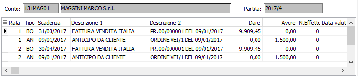

Introduzione
Come si è già visto, le partite aperte gestiscono tutte le problematiche relative ai crediti nei confronti di clienti.
Prima di esaminare i vari programmi inerenti le partite, è bene chiarire alcuni termini. Una “partita” corrisponde ad un documento (fattura, nota credito) o, meglio, all’insieme di operazioni che si riferiscono a quel documento. Si dice quindi che la partita è totalmente o parzialmente “scoperta” quando il documento non è stato pagato o lo è stato solo in parte. Si dice ancora che la partita è “esposta” quando a fronte di tale documento è stato emesso un effetto, e l’effetto è già stato presentato in banca per l’incasso ma non è ancora scaduto.
Una “partita” può avere più “scadenze”, se il pagamento è previsto in più rate. Ciascuna scadenza o rata può essere di tipo RD (Rimessa diretta), RB (Ricevuta bancaria), TR (Tratta), BO (Bonifico bancario), AS (Assegno) e così via, in funzione della modalità di pagamento prevista.
Ciascuna “scadenza” o “rata” può avere più “dettagli”: ha certamente come primo il rigo di rata che definisce l’importo e la data di scadenza della rata, nonché la modalità di pagamento. Ad esempio, RD. Successivamente si aggiunge un nuovo “dettaglio” riferito alla stessa rata quando viene incassato un primo acconto. Ancora vi si può aggiungere un terzo “dettaglio” sempre riferito alla stessa rata quando viene incassato il saldo e, se fosse stato praticato uno sconto, si aggiungerebbe un quarto “dettaglio” pari all’importo dello sconto.
Una nota di credito a se stante è una nuova partita e una nuova scadenza. Se tuttavia la stessa nota di credito è riferita ad un documento precedente da cui deve essere scalata, diventa un “dettaglio” della partita relativa al documento a cui si riferisce.
Analogamente un anticipo, finchè resta privo di riferimenti, è una partita e una scadenza a se stante. Ma quando l’anticipo viene portato in deduzione di una fattura, diventa un “dettaglio” della partita relativa alla fattura stessa.
Una partita si dice chiusa quando la somma algebrica degli importi dei suoi dettagli di scadenze totalizza zero.
Ciò detto, risulta facile comprendere il meccanismo adottato dall'applicazione. Le “partite” (documenti) vengono memorizzate nella tabella Movimenti contabili; i “dettagli di scadenza” (per brevità, “scadenze”) vengono invece memorizzati nella tabella Scadenze, ma contengono il riferimento della partita da cui provengono.
La registrazione di una fattura da pagarsi a 30 e a 60 giorni genera un rigo di Movimento contabile, intestato al cliente per il totale della fattura, e genera anche contestualmente due righi di Movimenti scadenze, di cui uno per la prima rata e metà dell’importo e uno per la seconda rata per la residua metà. Il rigo contabile non contiene le date di scadenza ed è quindi utile per tutti gli adempimenti contabili; i righi scadenze contengono invece le date, gli importi di ciascuna rata e le modalità di scadenza, e sono quindi utili per gli scadenzari, per il cash flow, per i solleciti.
La registrazione dell’incasso della prima rata genera un rigo di Movimento contabile e un rigo di tipo AC (accredito) di Movimento scadenze, riferito alla prima rata.
Quanto detto è documentato dall’analisi di una “partita” del cliente Maggini, e più precisamente della partita 17 del 2001 corrispondente alla fattura 19 del 21/08/2001 per complessivi Euro 1470,50. L’analisi raggruppa tutti i Movimenti scadenze relativi ad una partita, ordinati per numero di rata.
Vediamo il primo rigo della rata 1 che definisce la data di scadenza (31/10) tramite RD (rimessa diretta) della prima rata per un importo Dare di 735,25 Euro. Vediamo anche che la rata 1 è saldata tramite un pagamento (AC) di 735 Euro in Avere e uno sconto (SC) di 0,25 Euro in Avere. Vediamo ancora il rigo della rata 2 che definisce la seconda data di scadenza (30/11) tramite RD (rimessa diretta) per un importo Dare di 735,25 Euro.
Abbiamo pertanto al momento quattro “dettagli scadenze” per questa partita, mentre in contabilità abbiamo tre righi di movimenti contabili: uno per il totale fattura in Dare e due successivi per il pagamento parziale della prima rata e per lo sconto a pareggio della prima rata in Avere. La partita, come risulta evidente, è ancora aperta.

I righi della tabella movimenti Scadenze contengono quindi le informazioni atte a riconoscerne il tipo, la data di scadenza, i riferimenti alla partita, i riferimenti all’effetto se il tipo è RB, TR, CE, il riferimento agli agenti che percepiscono le provvigioni e soprattutto l’importo, che viene memorizzato sia nella divisa originaria del documento, sia, grazie alla presenza del cambio del giorno, nel controvalore in divisa di conto (Euro o Lire). Ciò permette di ottenere scadenzari, estratti conto, cash flow e situazioni crediti sia in divisa di conto che in divisa originaria e consente la determinazione automatica delle differenze cambio attive e passive al momento dell’incasso / pagamento.
Ciascuna partita è contrassegnata da un numero progressivo nell’anno che non ha nulla a che vedere con il numero di movimento contabile. Le successive registrazione di pagamenti (anche a mezzo effetti), insoluti e altre operazioni inerenti lo stesso documento creano ulteriori dettagli scadenze, fino alla “chiusura” della partita stessa.
Le scadenze consentono di generare gli effetti attivi e dalla loro situazione scaturiscono gli scadenzari, gli estratti conto ed i solleciti.
Le note di credito e gli anticipi possono creare scadenze autonome, se non sono “assegnati” a nessuna scadenza, ovvero possono costituire ulteriori dettagli di altre scadenze, se viene indicato il numero di documento (fattura) a cui si riferiscono.
Nel caso in cui un pagamento saldi, in tutto o in parte, più di una scadenza, avviene un “aggregazione”, ovvero alle scadenze interessate viene anche assegnato un nuovo numero di partita.
Poiché le scadenze nascono e si aggiornano tramite le registrazioni contabili, i programmi di gestione sono sostanzialmente costituiti dai programmi di interrogazione, stampa e trattamento delle partite aperte clienti.
È previsto un programma di manutenzione che consente, all’occorrenza, di modificare le scadenze delle varie partite in termini di tipo pagamento e di importi e di aggregare e disaggregare partite esistenti. In ogni caso, gli importi complessivi dei vari dettagli scadenze non possono essere modificati da questo programma, perché tale modifica creerebbe una incoerenza con l’importo delle scritture contabili. In tale evenienza occorrerà quindi procedere ad una variazione tramite il programma di Gestione prima nota.
I programmi di gestione delle partite sono raggruppati sotto le scelte Partite aperte clienti del menù di Contabilità.